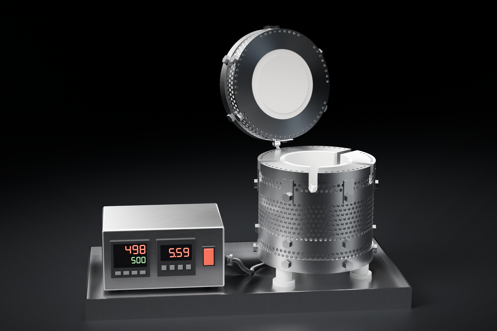

Heat & Clean Oven: plastic fit print list
Current design 2026-11-12 (top cap ring 20.0 mm). 14 files, 20 pieces, all true size in mm. Plastic for fit only, never heat it. Fasteners not printed: 30 M6 bolts + nuts, 2 M4 screws, 3 M6 leg screws.

Download all print files (zip)Oven parts (12 pieces)
The stainless parts, printed in plastic to check they fit together.

01Inner Wall Tube× 1
123.3 × 123.3 × 125.4 mm
ID 121.7, 0.8 wall, 4 glass slots.
01_Inner_Wall_Tube.stl

02Outer Perforated Tube× 1
131.7 × 131.7 × 125.4 mm
ID 129.3, Ø4 holes @ 6 mm, 1.2 wall, 3.0 air gap.
02_Outer_Perforated_Tube.stl

03Support Ring× 1
121.3 × 121.3 × 14.8 mm
Raised seat the ceramic sits on, 3 leg + 3 wire holes.
03_Support_Ring.stl

04Bottom Cap× 1
134.7 × 134.7 × 17.2 mm
Base of the body, 3 leg holes on Ø108.
04_Bottom_Cap.stl

05One-Piece Top Cap× 1
135.2 × 132.5 × 41.2 mm
Ring 20.0 mm from the ceramic, 6 bolt tabs, 4 slot grooves, 48 vents Ø3.0. Ceramic top should sit flush with its top.
05_One_Piece_Top_Cap.stl

06Lid Inner Tube× 1
123.3 × 123.3 × 34.2 mm
Lid inner wall.
06_Lid_Inner_Tube.stl

07Lid Outer Perforated Tube× 1
131.7 × 131.7 × 34.2 mm
Lid outer wall, perforated.
07_Lid_Outer_Perforated_Tube.stl

08Lid Top Disk× 1
134.7 × 134.7 × 14.2 mm
Top of the lid, 2 handle holes.
08_Lid_Top_Disk.stl

09Lid Ceramic Holder× 1
131.6 × 131.6 × 14.0 mm
Holds the ceramic lid disk; 48 vents line up with 05.
09_Lid_Ceramic_Holder.stl

10Lid Handle× 1
54.2 × 27.0 × 29.0 mm
2 posts, M4.
10_Lid_Handle.stl

11Lid Hinge Strap (placeholder)× 1
28.1 × 11.8 × 14.0 mm
Stand-in; factory uses its stock hinge.
11_Lid_Hinge_Strap.stl

13Hinge Pin (placeholder)× 1
5.0 × 30.0 × 5.0 mm
Stand-in pin.
13_Hinge_Pin.stl
Ceramic stand-ins (8 pieces)
Spacer rings and feet only. You already have the real heater core, base disk and lid disk; every part here is sized to fit around those (core 90.4 tall on a 4.9 base disk, Ø92.5).
C5Spacer Ring 10 mm× 5
ID 124.1 / OD 129.3 × 10 mm
One size for all 5: 3 in the base, 2 in the lid, each centred on its 6 bolts.
C5_Spacer_Ring_10mm.stl

C6Ceramic Foot× 3
28 × 28 × 25 mm
Leg screw hole Ø6.6 through.
C6_Ceramic_Foot.stl
Steel tray 14 is left out this round.